Uso de la cuchara para comer
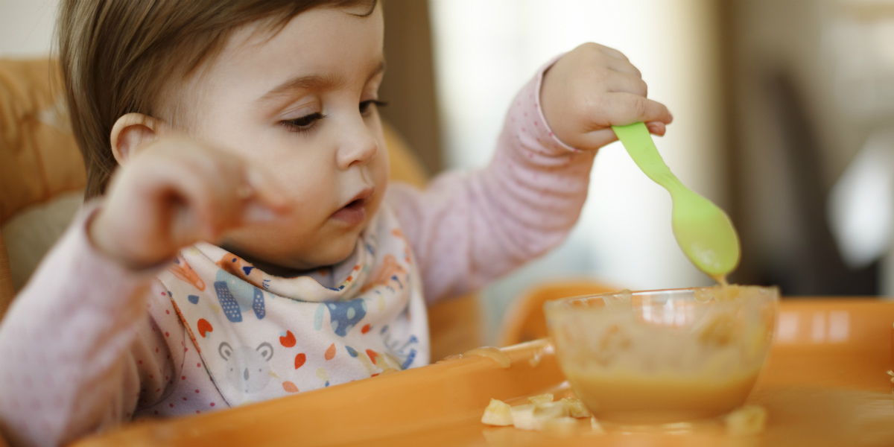
Figure 1. Baby Led Weaning. Nestlé Family (s. f.).
1. Introducción
La cuchara, más allá de su función práctica, constituye un signo cultural que refleja las formas en que las sociedades conciben la alimentación, la convivencia y la relación entre cuerpo y cultura. Este ensayo analiza la cuchara desde tres enfoques: como objeto de diseño, como artefacto histórico y como signo simbólico, utilizando aportes teóricos de Munari, Norman, Urbina, Zarzalejos, Pineda, Barthes, Laborda Gil, Bennett y Elias.
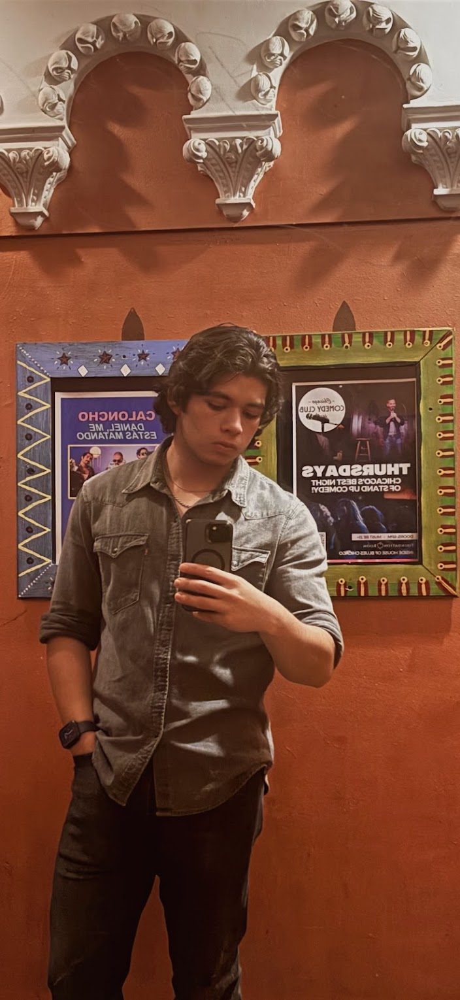
Observación personal: El automatismo cotidiano
En mi vida cotidiana, el uso de la cuchara es un gesto tan naturalizado que resulta casi imperceptible. Cada mañana, al tomar el café, al comer cereal, sopa o arroz, voy automáticamente hacia el cajón de cubiertos. En contextos sociales, particularmente en comidas formales o reuniones familiares, utilizar la cuchara "correctamente" se convierte en una demostración silenciosa de educación y pertenencia. Esta práctica aparentemente neutral revela, sin embargo, profundas estructuras de poder y significación cultural que operan de manera casi invisible en nuestra vida diaria.
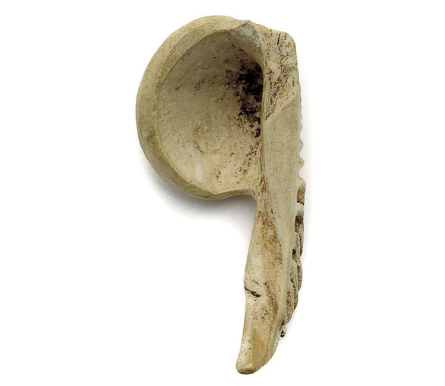
Figure 2. Historia de la cuchara. Relatos e Historias en México (2021).
Las primeras cucharas prehistóricas: conchas marinas y huesos utilizados hace más de 10,000 años
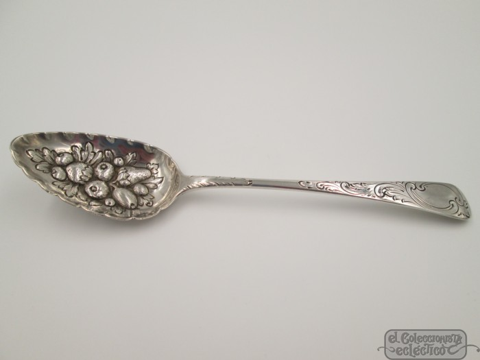
Figure 3. Cuchara Richard Crossley, Siglo XVIII. El Coleccionista Ecléctico (s. f.).
Cubiertos ornamentados como símbolos de estatus en la aristocracia europea
 Figure 4. Cuchara Vianca de servicio. Bodega Aurrera (s. f.).
Figure 4. Cuchara Vianca de servicio. Bodega Aurrera (s. f.).
Diseño funcional contemporáneo: democratización del utensilio
2. Desarrollo
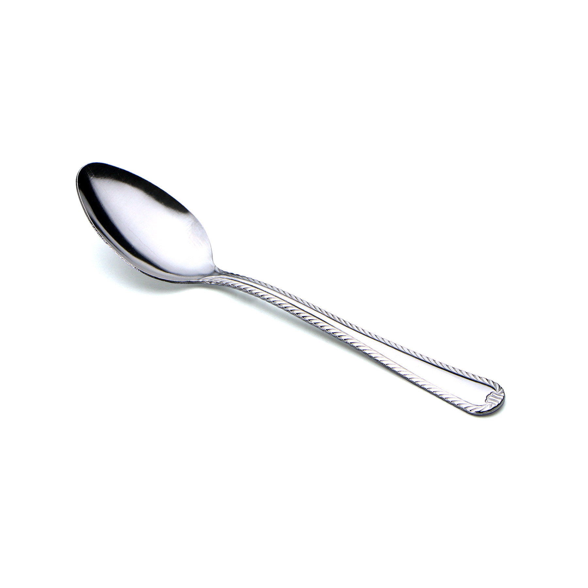
Figure 5. Cuchara cafetera Vianca. Vianca (s. f.).
a) La cuchara como objeto funcional y de diseño
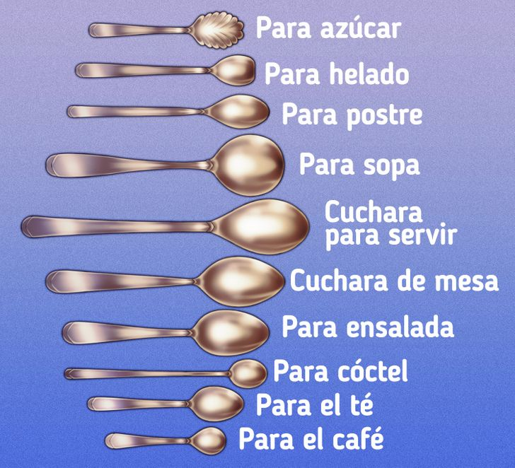
Figure 6. Imagen de TikTok. @user7381756558246 (s. f.).
Bruno Munari (2016) propone que los objetos nacen de una necesidad funcional y de un proceso racional de diseño. La cuchara ha evolucionado desde las formas más simples hasta materiales modernos como el acero o el plástico. Donald Norman (2011) explica que el diseño cotidiano influye en la relación emocional entre el usuario y el objeto, haciendo que la experiencia de uso sea natural e intuitiva.
Las investigaciones arqueológicas documentan que la cuchara de mayor antigüedad registrada se encuentra en el sitio Uyun al-Hammam, del periodo epipaleolítico (10,000 a.C.), correspondiendo a una cuchara de hueso (Maher et al., 2011, citado en Complejo Arqueológico El Brujo). Durante el período neolítico (8,000 a.C.) se han encontrado cucharas tanto de hueso como de arcilla (Stefanović et al., 2019; Vitezović, 2011). El hombre primitivo empleó conchas de mar para llevarse alimentos líquidos a la boca, especialmente tras el descubrimiento de la sopa en el Neolítico.
b) La cuchara como objeto cultural e histórico
 Figure 7. Banquete de Trimalchio (Roma antigua). Argiletum Tour Operator (2024).
Figure 7. Banquete de Trimalchio (Roma antigua). Argiletum Tour Operator (2024).
Urbina y Urquijo (2015) plantean que los objetos son testimonios de la vida cotidiana. La cuchara refleja transformaciones sociales, tecnológicas y alimentarias. Zarzalejos Prieto et al. (2014) destacan que en el mundo clásico los utensilios de mesa funcionaban también como símbolos de estatus. En la Antigua Roma, las cucharas se fabricaban con mangos puntiagudos que funcionaban como primitivos tenedores, ideales para comer marisco.
Durante la Edad Media, la cuchara personal se convirtió en un objeto preciado, aunque comer con las manos seguía siendo común en todas las clases sociales. En el siglo XV se popularizaron las "cucharas del Apóstol", fabricadas en plata con la figura del santo patrón, que se convirtieron en el regalo ideal para recién nacidos. Entre los siglos XVI y XVIII abundaron las cucharas de plata en las casas de la burguesía y la nobleza europea.
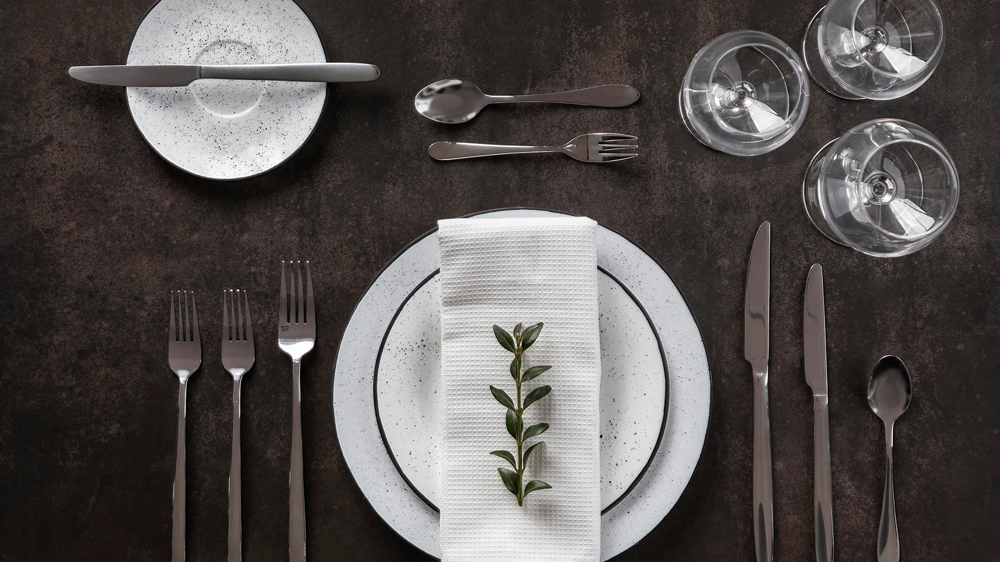
Figure 8. Banquetería contemporánea. Crista Hogar (s. f.).
Occidente contemporáneo
Uso obligatorio de cubiertos considerado higiénico y civilizado. Comer con las manos es visto como infantil en contextos formales.
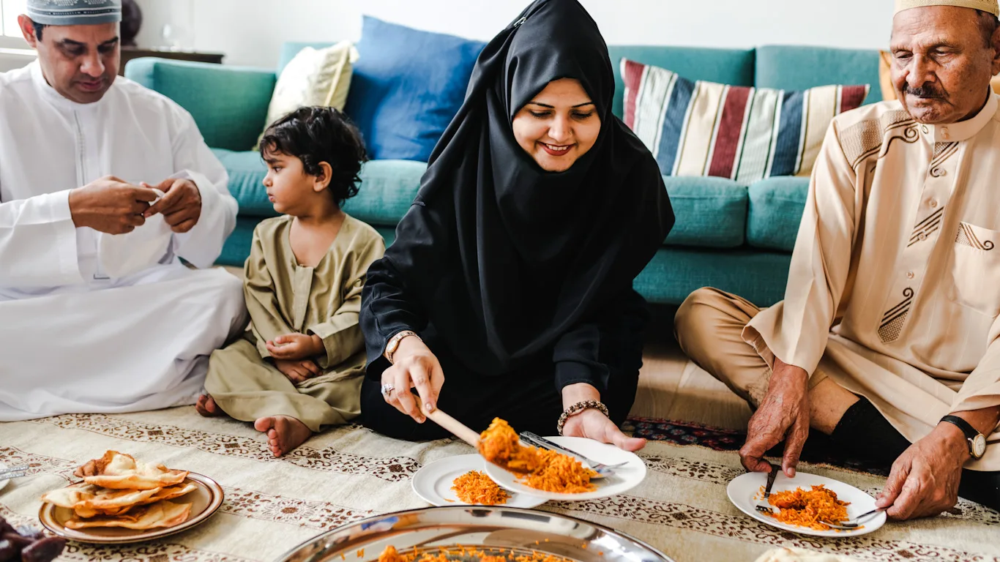
Figure 9. Familia musulmana comiendo en el suelo. Churchill (s. f.).
India y Medio Oriente
Comer con las manos es la norma cultural. Se considera que permite una conexión más directa con el alimento y sus texturas.
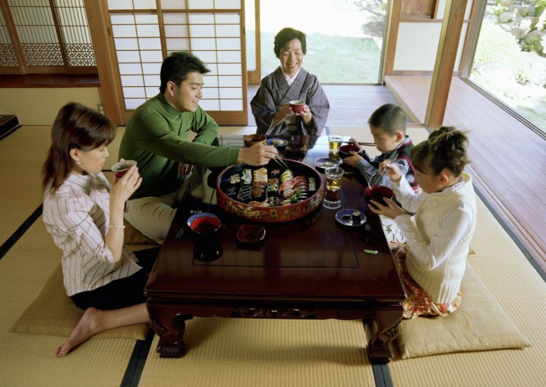
Figure 10. Cultura japonesa: comer al 80%. Ruíz (2025).
Asia Oriental
Predominio de palillos sobre cucharas para sólidos. En Tailandia, la cuchara es el cubierto más empleado, no los palillos.
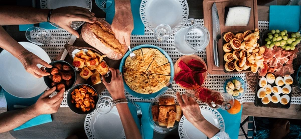
Figure 11. Diversidad cultural alimentaria. Shutterstock (s. f.).
Comunidades diversas
En Japón, sorber los fideos es señal de aprecio. En China, eructar puede indicar que disfrutaste la comida.
c) La cuchara como signo y símbolo
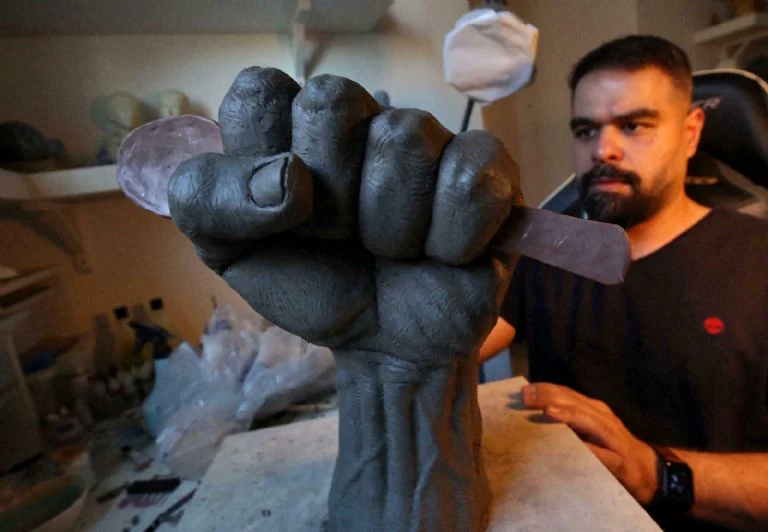
Figure 12. Cuchara como símbolo palestino. Minuto Neuquén (2021).
Pineda y Pineda (2012) consideran que los objetos cotidianos son textos culturales cargados de significado. Barthes (1999) explica que los objetos modernos se convierten en mitos y símbolos que naturalizan lo que es histórico y contingente. Bennett (2010) propone que los objetos poseen agencia material y participan activamente en la vida social, disciplinando cuerpos y reproduciendo jerarquías.
 Figure 13. Roland Barthes – Arte y lenguaje. CalledelOrco (s. f.).
Figure 13. Roland Barthes – Arte y lenguaje. CalledelOrco (s. f.).
"El mito no se define por el objeto de su mensaje sino por la forma en que se lo
profiere: sus límites son formales, no sustanciales" - Roland Barthes, Mitologías (1999)
3. El mito detrás del uso de la cuchara: Análisis barthesiano
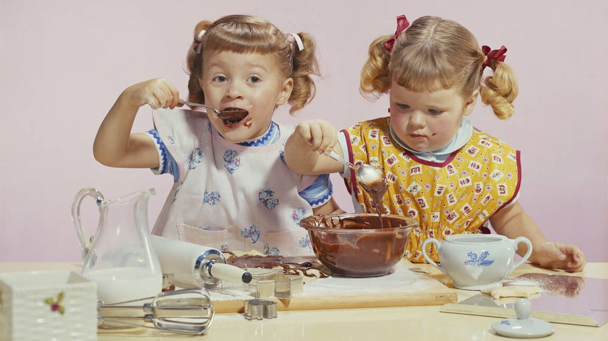
Figure 14. Origen de la cuchara. Macías (2023).
El mito de la civilización a través de los modales en la mesa
El uso de la cuchara no es simplemente una cuestión de higiene o practicidad; es la materialización de un mito fundacional de la modernidad occidental: la idea de que existe una escala evolutiva de la civilización que se manifiesta en los hábitos corporales y alimenticios. Como señala Elias (1989), los modales en la mesa funcionan como formas de comportamiento que una sociedad espera de sus miembros, sirviendo para observar los cambios de las costumbres, normas y tabúes sociales.
El robo de sentido: De lo histórico a lo natural
Siguiendo a Barthes (1999), el mito opera mediante un robo del sentido histórico para transformar lo contingente en natural. El uso de la cuchara, lejos de ser una práctica universal, tiene un origen específico en la Europa aristocrática. Norbert Elias (1989) documenta en "El proceso de la civilización" cómo durante los siglos XVI y XVII ocurrió una modificación radical en el comportamiento social europeo.
Elias (1989) analiza los modales medievales y demuestra que el comportamiento de los hombres medievales era muy diferente al actual: todos comían con las manos, desde el rey hasta el campesino, y apenas había jabón para lavarse. La transformación hacia el uso sistemático de cubiertos no respondió a razones higiénicas (el concepto de vida microscópica aún no existía), sino a distinciones de clase social. La publicación en 1530 del libro "De civilitate morum puerilium" de Erasmo de Rotterdam cambió radicalmente las reglas de etiqueta, aconsejando poner las manos sobre la mesa, no apoyar los codos y usar cubiertos.
Lo que en realidad es una convención cultural europea se ha naturalizado como "la forma humana de comer". Este proceso de naturalización es precisamente el mecanismo del mito: hacer pasar la historia por naturaleza.
 Figure 15. Buenas maneras al tomar sopa. Hora 13 Noticias (2019).
Figure 15. Buenas maneras al tomar sopa. Hora 13 Noticias (2019).
Implicaciones de poder y colonialidad
¿Quién define qué es "civilizado"? El sociólogo Norbert Elias explica que históricamente los modales en la mesa han sido marcados por las clases poderosas. El servicio a la francesa lo impuso la Corte de Versalles y fue imitado por toda Europa. Las reglas de etiqueta se originaron en las cortes europeas, donde los modales se hicieron cada vez más sofisticados con la aparición de vajillas de lujo y cubiertos individuales.
El proceso civilizatorio, como lo analiza Elias (1989), emanó principalmente de cortes aristocráticas para convertirse en un comportamiento socialmente extendido. Lo que antiguamente era un código exclusivo de las clases altas para diferenciarse de las bajas se transformó en un comportamiento legitimado para todos los estratos sociales.
Durante los procesos coloniales, la imposición de valores y prácticas culturales europeas sobre culturas subordinadas fue un mecanismo de dominación. Como señala la literatura sobre colonialismo cultural, la imposición de la cultura europea llevó a la pérdida de identidad cultural, la marginación de culturas autóctonas y la desvalorización de lenguas y costumbres locales. La imposición de "buenos modales" europeos fue parte de este proyecto civilizatorio colonial.
Hoy, este sistema de poder persiste: en contextos laborales formales, entrevistas de trabajo o cenas de negocios, el dominio de la etiqueta con cubiertos sigue siendo un marcador de clase y educación.
Forma y concepto: El sistema semiológico segundo
En el análisis barthesiano, el mito funciona como un sistema semiológico segundo que toma un signo completo y lo convierte en significante de un nuevo sistema:
- Primer nivel (lengua): Cuchara = utensilio cóncavo con mango para llevar alimentos líquidos o semilíquidos a la boca.
- Segundo nivel (mito): Cuchara = civilización, higiene, educación, modernidad, superioridad cultural.
El concepto mítico que se vehicula a través de la cuchara es el de la "civilización por disciplinamiento corporal". Elias (1989) explica que las coacciones pacíficas que ejercen las relaciones sociales van incrustándose en la personalidad, consolidando un aparato de costumbre peculiar, un "super-yo" específico que pretende regular los afectos de acuerdo con la estructura social.
La forma de este mito se manifiesta en:
- Manuales de etiqueta y urbanidad (desde Erasmo en 1530, pasando por el Manual de Carreño en 1853)
- Programas educativos que enseñan "buenos modales"
- Representaciones mediáticas que asocian la falta de modales con personajes cómicos o incivilizados
- Diseño de espacios públicos (restaurantes formales vs. informales)
- Códigos de comportamiento en contextos institucionales
El gran relato moderno subyacente: Este mito se conecta con el metarrelato de la modernidad sobre el progreso lineal. Elias (1989) aclara que el proceso civilizatorio no es ni racional ni irracional, sino que se mantiene en marcha por medio de la dinámica propia de una red de relaciones humanas. La cuchara se convierte así en un pequeño monumento al mito del progreso occidental.
Necesidades culturales que satisface el mito
¿Por qué persiste este mito? Porque satisface múltiples necesidades del orden social contemporáneo:
- Legitimación del orden social: Justifica diferencias de clase presentándolas como diferencias de "educación".
- Identidad cultural: Proporciona marcadores de pertenencia a ciertos grupos sociales.
- Control corporal: Como explica Elias, disciplina los cuerpos mediante autocontroles que funcionan de modo casi automático.
- Distinción simbólica: Permite diferenciarse de "otros" considerados menos refinados.
- Reproducción cultural: Mantiene la hegemonía de patrones culturales específicos como "universales".
Manifestaciones contemporáneas del mito
El mito se propaga y renueva constantemente a través de:
- Programas de televisión sobre etiqueta y protocolo
- Sistemas educativos que incluyen la enseñanza de modales
- Industria de la consultoría en etiqueta corporativa
- Discursos sobre "higiene" que naturalizan preferencias culturales
- Redes sociales donde se juzga la "educación" por el comportamiento al comer
4. Conclusión
El análisis de la cuchara demuestra que incluso los objetos más cotidianos encierran significados profundos y operan como vehículos de mitos culturales. Desde lo funcional hasta lo simbólico, la cuchara contiene la historia y las prácticas culturales que dan forma a nuestra relación con el acto de comer.
Más allá de su utilidad práctica, la cuchara es un instrumento de distinción social que naturaliza jerarquías bajo la apariencia de neutralidad higiénica o funcional. Como documenta Elias (1989), el proceso civilizatorio se caracteriza por el aumento en los umbrales de vergüenza y repugnancia, desarrollando autocontroles internalizados que funcionan de manera casi automática.
Desenmascarar este mito no implica rechazar el uso de cubiertos, sino reconocer su carácter construido y abrirse a la legitimidad de otras formas culturales de relacionarse con el alimento. Como propone Bennett (2010), los objetos tienen agencia: la cuchara actúa sobre nosotros tanto como nosotros sobre ella, disciplinando nuestros cuerpos, marcando nuestras identidades y perpetuando sistemas de significación que trascienden su función inmediata.
Comprender esto es un primer paso hacia una reflexión crítica sobre nuestras prácticas cotidianas más aparentemente inocentes, reconociendo que lo que consideramos "natural" es en realidad el resultado de largos procesos históricos de construcción social.
Referencias
Argiletum Tour Operator. (2024, 2 agosto). El banquete de Trimalchio - antiguos romanos en la mesa. Viajes Por Italia. https://www.argiletumtour.com/es/el-banquete-de-trimalchio-antiguos-romanos-en-la-mesa/
Barthes, R. (1999). Mitologías. Siglo XXI Editores.
Bennett, J. (2010). Vibrant Matter: A Political Ecology of Things. Duke University Press.
Bodega Aurrera. (s.f.). Cuchara de servicio 42 cm Vianca acero inoxidable. https://www.bodegaaurrera.com.mx/ip/cuchara-de-servicio-42-cm-vianca-acero-inox-vianca-vianca-hogar/00750605660059
Churchill, R. (s.f.). Familia musulmana cenando en el suelo. 123RF. https://es.123rf.com/free-photo_102863662_familia-musulmana-cenando-en-el-suelo.html
Complejo Arqueológico El Brujo. (s.f.). Las cucharas en el antiguo Perú. https://www.elbrujo.pe/blog/las-cucharas-en-el-antiguo-peru
Crista Hogar. (s.f.). Banquetería. https://www.cristahogar.mx/our_services/service004/
El Coleccionista Ecléctico. (s.f.). Cuchara decorada Richard Crossley Frutas plata de ley Siglo XVIII. https://www.elcoleccionistaeclectico.com/es/cuchara-decorada-plata-de-ley-siglo-xviii-richard-crossley-frutas-p21471
Elias, N. (1989). El proceso de la civilización: Investigaciones sociogenéticas y psicogenéticas. Fondo de Cultura Económica.
Hora 13 Noticias. (2019, 5 noviembre). Buenas maneras en la mesa, a la hora de tomar la sopa [Vídeo]. YouTube. https://www.youtube.com/watch?v=vsO3PeVwAUc
Laborda Gil, X. (2023). Semiótica cultural de las maneras en la mesa.
Macías, C. (2023, 2 marzo). Viaje al origen de las cucharas: su historia es mucho menos aburrida de lo que piensas. El Confidencial. https://www.elconfidencial.com/alma-corazon-vida/2023-03-02/revolucion-cuchara-pequena-postre-historia-moda_3580024/
Maher, L. A., et al. (2011). A Unique Human-Fox Burial from a Pre-Natufian Cemetery in the Levant (Jordan). [Citado en Complejo Arqueológico El Brujo].
Munari, B. (2016). ¿Cómo nacen los objetos? Apuntes para una metodología proyectual. Editorial Gustavo Gili.
Nestlé Family. (s.f.). Descubre el método Baby Led Weaning. https://share.google/images/7mzooa56wHg8HtqiF
Norman, D. A. (2011). La psicología de los objetos cotidianos. Nerea.
Pascual Benito, J. L. (1999). La variedad morfotécnica y funcional de las cucharas óseas del neolítico de la Península Ibérica. SAGVNTVM-PLAV, Extra-2, 143-150.
Pineda Cruz, É., & Pineda Repizzo, A. F. (2012). El objeto de uso como texto: significación y comunicación en los objetos de la vida cotidiana.
Redirect notice. (s.f.). Diversidad cultural comida. https://www.google.com/url?sa=i&url=https%3A%2F%2Fwww.shutterstock.com%2Fes%2Fsearch%2Fcultural-diversity-food
Relatos E Historias En México. (2021, 9 julio). La desconocida historia de la cuchara. https://relatosehistorias.mx/nuestras-historias/la-desconocida-historia-de-la-cuchara
Ruíz, X. (2025, 5 noviembre). El secreto japonés de la eterna juventud: Conoce la sabiduría de comer al 80%. Cocina Vital. https://www.cocinavital.mx/blog-de-cocina/tips-de-salud/el-secreto-japones-de-la-longevidad-la-sabiduria-de-comer-al-80/2025/11/
Stefanović, S., et al. (2019). Bone spoons for prehistoric babies: Detection of human teeth marks on the Neolithic artefacts from the site Grad-Starčevo (Serbia). PLOS ONE.
Urbina, D., & Urquijo, C. (2015). Objetos y personas: La necrópolis de Cerro Colorado y la arqueología de la edad del hierro en la Meseta Sur. Editorial CSIC Consejo Superior de Investigaciones Científicas..
Zarzalejos Prieto, M., Guiral Pelegrín, C., & San Nicolás Pedraz, M. P. (2014). Historia de la cultura material del mundo clásico. Editorial Universitaria de Educación a Distancia.